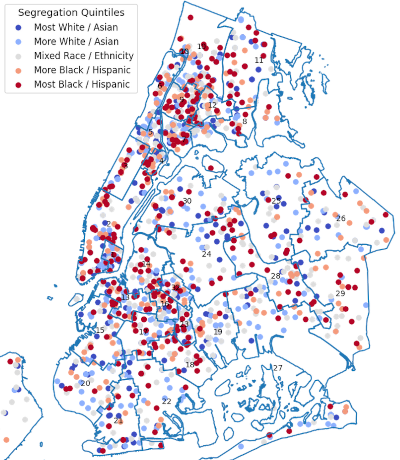

NYC Schools Open Data Portal
NYC Schools Open Data Portal#
The mission of the NYC Schools Open Data Portal is to make open data regarding public schools in New York available to everyone interested in improving our schools, regardless of their technical background or familiarity with data analysis. We believe that fighting for educational equity requires us to broaden the audience of who can use and analyze data. Accordingly, we want to make educational data more accessible, train people to use it, and demystify and remove the barriers to access.
This portal is meant to:
make it easier to access the data needed for analysis
help people learn more about computer programming and data science through studying NYC school data
encourage people to collaborate in examining data and publishing their findings